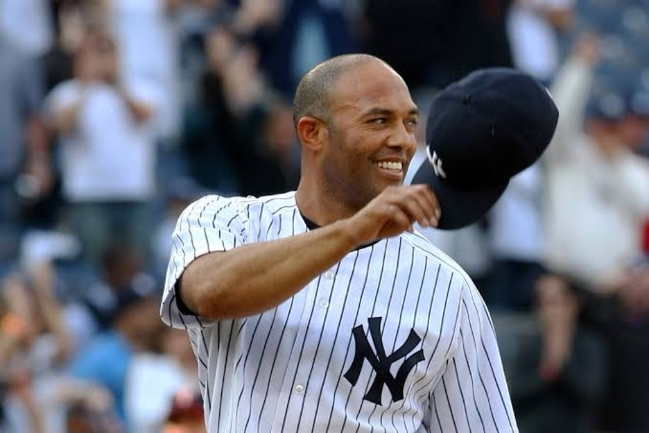

The New York Yankees are the most successful and iconic franchise in Major League Baseball history. Founded in 1903, the Yankees have won a record 27 World Series championships and 40 American League pennants. Their legacy is built on legendary players such as Babe Ruth, Lou Gehrig, Joe DiMaggio, Mickey Mantle, Yogi Berra, Derek Jeter, and Mariano Rivera.
Known for their pinstripe uniforms and Yankee Stadium, the team has set the standard for excellence in professional baseball. Their success on the field is matched by a massive global fanbase and a lasting cultural impact. From historic comebacks to dominant dynasties, the Yankees’ rich history continues to shape the game of baseball.
The Yankees’ dominance began in the 1920s with the legendary “Murderers’ Row,” led by Babe Ruth and Lou Gehrig, ushering in the first of many dynasties. The team continued to thrive through the decades, winning titles in nearly every era, including five consecutive championships from 1949 to 1953 — a feat still unmatched in MLB history. Their consistent excellence turned them into the gold standard for professional sports franchises.
Off the field, the Yankees have become a symbol of tradition, prestige, and winning. Their rivalries, most notably with the Boston Red Sox, are some of the most intense in sports. With a legacy built on Hall of Famers, unforgettable moments, and a commitment to excellence, the Yankees remain a cornerstone of baseball history and a source of pride for generations of fans.
The Dynasties
The New York Yankees have built five iconic dynasties across different eras. Their first, in the 1920s and '30s, was led by Babe Ruth and Lou Gehrig, highlighted by the legendary 1927 team. After World War II, the Yankees dominated again from 1947 to 1953, winning five straight championships with stars like Joe DiMaggio, Yogi Berra, and Mickey Mantle. The momentum continued from 1956 to 1964, with more titles and historic moments like Don Larsen’s perfect game. In the late 1970s, Reggie Jackson and Thurman Munson brought back-to-back titles with flair and intensity. Most recently, the Yankees’ late-1990s dynasty, powered by the “Core Four” and manager Joe Torre, captured four championships in five years, cementing their legacy in the modern era.
"The history of the Yankees is virtually the history of baseball."
Whos not in the Hall of Fame?
As of 2024, the New York Yankees have 28 players who were inducted into the Baseball Hall of Fame primarily for their contributions as Yankees. If you include players, managers, and executives who spent part of their careers with the Yankees but were inducted under another team or more broadly, the number rises to over 60 total Hall of Famers associated with the franchise. Here are some of the most notable Yankees Hall of Famers: Babe Ruth, Lou Gehrig, Joe DiMaggio, Mickey Mantle, Yogi Berra, Whitey Ford, Derek Jeter, Mariano Rivera, Reggie Jackson (though he also played for the A's), Phil Rizzuto, Goose Gossage, Ron Guidry (not yet inducted but often debated), Joe Torre (manager).
The next yankees expected to join that prestigous group are Gerrit Cole, Aaron Judge, and Giancarlo Stanton.
 Mariano Rivera is the first and only baseball player to ever be conducted unanimously into the Hall of Fame .They hate us, cause they ain't us
While the New York Yankees have built a legacy of excellence, they’ve also become one of the most polarizing teams in sports. For decades, many MLB fans have rooted against the Yankees, seeing them as the embodiment of baseball’s “evil empire.” Their immense success — with 27 World Series titles — has led to widespread resentment, especially from fans of teams that have long struggled for a championship.
Critics often point to the Yankees’ deep financial resources and history of high-profile signings as examples of how they “buy championships.” This perception of unfair advantage, combined with a large, sometimes boastful fan base, fuels a love-to-hate relationship. Yet ironically, this widespread opposition has only added to the Yankees' mystique — making them not just a team, but a symbol of dominance, rivalry, and baseball tradition.